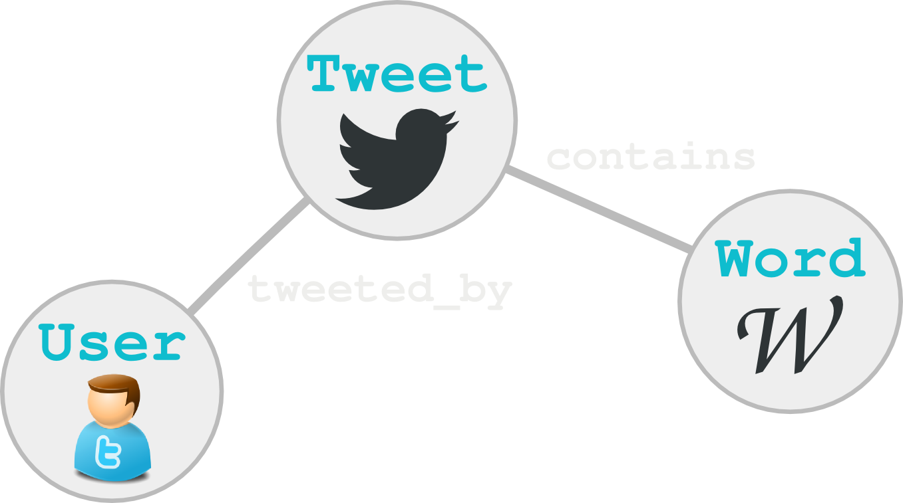
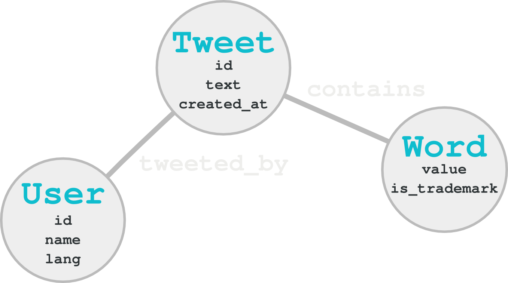

Created by
Ruben Hervas, Alessio Conese and Marc Aymerich
An open-source graph database, implemented in Java.
“Embedded, disk-based, fully transactional Java persistence engine that stores data structured in graphs rather than in tables”
Neo4j is the most popular graph database.
Nothing serious
Relational databases can model graphs pretty well.
However,
graph databases are stronger in one particular aspect ...
Press down to find more.
Not really
Some people argue that performance issues may arise on RDBMS when dealing with billions of rows and relations,
but benchmarks are always controversial.
Graph databases don't scale that well

Is not really relevant
Cypher is a great Graph Query Language,
the problem is that each graph database uses its own language
Programatic APIs are a more popular option,
acting as an abstraction layer that allows writing
database agnostinc queries.
Like an ORM, but for graphs.
Relational databases have a higher barrier to entry
With Neo4j you can load your dataset, perform queries, visualize them with D3.js and integrate the results on a fancy HTML presentation in no time.
11810 tweets from 7195 users sent during the 3 days of the WMC 2014 in Barcelona area.
Nodes and Relations
Node Properties

MATCH (Tweet)-[:appears]->(Word)
WHERE Word.is_tradermark = true
WITH Word, count(Tweet) AS tweets
RETURN Word, tweets
ORDER BY tweets DESC
LIMIT 25
Press down to see the visualization.
MATCH (User)<-[:twitted_by]-(Twit)-[a:appears]->(Word)
WHERE Word.is_tradermark = true
WITH Word, count(DISTINCT User) AS users
RETURN Word, users
ORDER BY users DESC
LIMIT 25
Press down to see the visualization.
MATCH (Tweet)-[:twitted_by]->(User)
WITH User, count(Tweet) AS tweets
RETURN User, tweets
ORDER BY tweets DESC
LIMIT 25
Press down to see the visualization.
MATCH (User)<-[:twitted_by]-(Tweet)-[a:appears]->(Word)
WHERE Word.is_tradermark = true
WITH User, count(Word) AS trademarks
RETURN User, trademarks
ORDER BY trademarks DESC
LIMIT 25
Suggestion, get users with disctinct trademarks by adding a DISTINCT statement on count()
count(DISTINCT Word)
Press down to see the visualization.
MATCH (User)
RETURN User.lang, count(User.lang)
ORDER BY count(User.lang) DESC
LIMIT 3
FOREACH lang in ['en', 'es', 'ca']
MATCH (User)<-[:twitted_by]-(Tweet)-[a:appears]->(Word)
WHERE Word.is_trademark = true AND User.lang = lang
WITH Word, count(DISTINCT User) AS users
RETURN Word, users ORDER BY users DESC
LIMIT 25
MATCH (User)<-[:twitted_by]-(Tweet)-[a:appears]->(Word)
WHERE Word.is_trademark = true AND NOT User.lang IN ['es', 'en', 'ca']
WITH Word, count(DISTINCT User) AS users
RETURN Word, users ORDER BY users DESC
LIMIT 25
Press down to see the visualization.
MATCH (Tweet)-[appears]->(Word)
WHERE Word.is_tradermark = true
WITH DISTINCT Tweet, Word
MATCH (Word2)<-[appears]-(Tweet)
WHERE Word2.is_tradermark = true and Word.value <> Word2.value
WITH Word2.value as name, Word.value as name2, count(Word2) as size
RETURN name, name2, size
Press down to see the visualization.
MATCH (Word)<-[:appears]-(Tweett)-[:appears]->(Word2)
WHERE Word2.classification = "positive" AND Word.is_tradermark = true
RETURN Word.value AS name, count(Tweet) AS size
ORDER BY count(Tweet) DESC
LIMIT 20
Notice that additional queries are needed for word classification
Press down to see the visualization.